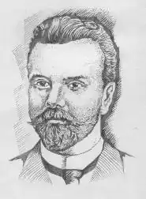
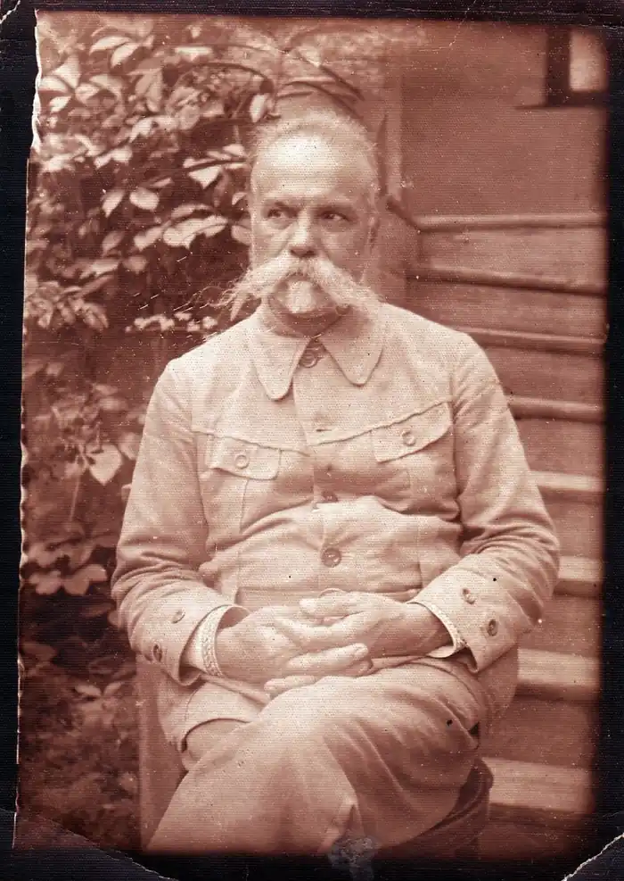

ЧЕРНЯВСЬКИЙ МИКОЛА ФЕДОРОВИЧ
(3.11868 — 19.1.1938)
Відомий український поет, стильовою особливістю творчості якого є поєднання в поетичному слові різних напрямів-романтичного, реалістичного, модернізму і пленеризму (малювання на повітрі ). Характерним для його творчої манери було звертання до таких новітніх художніх течій двадцятого століття , як імпресіонізм і символізм. Він ставив питання про пізнання Бога в собі, про гармонію людини з Природою та Космосом; викривав людську жорстокість та некеровану вседозволеність, зло, риси, які так пишно розквітнуть у нашій країні на схилі життєвого шляху письменника. Яскравою поетичною сторінкою у творчості М.Ф.Чернявського є тема рідного краю, степового Донбасу. Народився Микола Федорович Чернявський 3 січня 1868 року в селі Торській Олексіївці (тепер село Октябрське Добропільського району) Бахмутського повіту Катеринославської губернії в сім’ї священика. Згодом родина переїхала в село Новобожедарівку Слов’яносербського повіту (нині Луганська область ). Закінчивши початкову школу, М.Чернявський вчиться у Луганській приватній, а згодом — в Бахмутській духовній школі. Вступає до Катеринославської семінарії, після закінчення якої одержав призначення в Бахмутську школу, в якій нещодавно вчився сам. Тут викладав співи і музику. Поповнюючи знання шляхом самоосвіти, готує першу збірку поезій, яку видає в Харкові 1895 року під назвою "Пісні кохання". А вже через три роки виходить друга збірка поета — "Донецькі сонети"(1898). Видана вона була в Бахмуті і стала чи не першою художньою книжкою, надрукованою в Донбасі. З цього, власне, часу починає розвиватись літературне життя у шахтарському краї. М.Ф.Чернявський звертався у своїй творчості до теми шахтарської праці. У вірші " Шахтар " поет писав: У сажі , чорний, як мара, Рукою піт з лиця втира І кайлом вугіль б’є і б’є В норі шахтар... У Бахмуті М.Чернявський видав кілька збірок творів Панька Куліша, а також збірку спогадів про видатного українського письменника "Щирі сльози над могилою П.О.Куліша". Після дванадцятирічного учителювання він у 1901 році переїздить до Чернігова на посаду земського статиста. Тут познайомився з видатним українським письменником Михайлом Коцюбинським, який справив значний благотворний вплив на становлення художньої майстерності письменника. У Чернігові він зустрівся з Борисом Грінченком, про якого згодом написав нарис "Кедр Ливана". Історію з переселенням М.Чернявського до Чернігова переповідає у своїх спогадав відомий український політичний і культурний діяч Олександр Лотоцький, який з перших кроків поетичного шляху підтримував нашого земляка. "Коли появився перший збірник його поезій "Пісні кохання",—згадував він,— був я тим збірником зачарований, — і взагалі тоді книжка українська не густо появлялася, а такої насолоди, що давав той збірник, то таки не часто доводилося зазнавати. Зразу було знати, що се "поет милостю божою" . Зацікавлений новим непересічним талантом і бажаючи витягти його на ряст українського культурного життя, Лотоцький через свого друга Шрага улаштував Чернявського до статистичного відділу чернігівського земства. Зміна обставин життя, мали позитивний вплив на письменника. Сам Лотоцький про це написав так: "Треба сказати, що обставини ті — перебування в чернігівській громаді особливо — мали добрий вплив і на зріст політично-громадського світогляду письменника. До того часу жив він у дуже глухому провінціяльному кутку, самотужки — інтуїцією поетичної думки — додумався до української ідеї та до писання українського мовою, але з погляду політичного був чистою дитиною, і псевдонімні спроби його на полі публіцистичному були більше, як наївні. А Чернігів був одним з найбільш інтелігентних провінціяльних міст в Росії, громадянське життя там було розвинене, була українська громада, — ото ж для молодого поета се була добра школа громадського життя."2 У нарисі "Червона лілея" М. Чернявський відтворив творчу лабораторію М. М. Коцюбинського, деякі його людські і мистецькі якості. Поета цікавили різні аспекти літературного таланту прозаїка, його погляди на життєві явища. І це закономірний інтерес: щоб, краще пізнати таємниці літературного процесу, їх краще вивчати на прикладах життя талановитих майстрів. Ось, наприклад, одна з нерозв'язаних проблем кожного письменника чи творчої людини: для чого живу? "Коцюбинський дуже любив життя. Любив у ньому те, що має в собі красу й світло, радість і ласку. Любив сонце, весну, літо. В сірому чистенькому костюмі, в червоній турецькій фесці, весною й літом, не вважаючи на спеку, він ходив по своєму саду й хазяйнував. Сонце пронизувало його наскрізь промінням, а він сухий і бадьорий, неначе купався в його теплі. Я виріс у степу, на жагучих вітрах, на шелестких суховіях, і мене стомлював чернігівський весняний спокій, тиша і млосність літнього дня. А Михайло Михайлович почував себе чудово, — так само, як почувала себе його червона лілея... І взагалі він здавався задоволеним життям. Але чи носив він у своїй душі ту вищу гармонію, що дає людям щастя? Чи мав він суцільний сталий світогляд, що давав би йому відповідь На всі питання безсонного розуму. Давав би захист од усіх потвор і Страховищ ночі? Ні Ах, то все старе й те саме. То питання: що я єсть таке? Звідки прийшов. куди піду? Нащо живу на світі?.." Такий погляд на сутність письменницької праці виникає перед кожним справжнім митцем, хвилював він і Чернявського. М.Чернявський виявив себе митцем широких тематичних і жанрових уподобань: писав вірші, оповідання, нариси, перекладав з іноземних мов. Маючи "м’яку вдачу, з нахилом мрійливості" ( С. Єфремов ), поет часто звертався до образів і картин природи рідної Донеччини, історії України, вважав свою творчість "піснею помсти" за народні кривди. Застерігав народ від революційної жорстокості, яка може принести муки і пролиття невинної крові. Чернігівський період життя і творчості духовно збагатив поета, та рідні степові простори кликали Миколу Федоровича додому. Але обставини склалися так, що письменник зв’язав своє життя з близькою за географічними ознаками рідному Донбасу — Херсонщиною. Тут, на початку ХХ ст., діяв потужний загал української інтелігенції, велась широка культурно-просвітницька діяльність. На Херсонщині письменник зустрів революційні події 1917 року, вчителював, керував Просвітою, продовжував писати. У кінці 20-х років у харківському видавництві "РУХ" вийшли 10 томів його вибраних творів. Провідним мотивом у віршах пореволюційної доби зазвучав песимістичний настрій поета, який не зміг примиритись з придушенням національного відродження, штучним голодомором в українських селах на початку 30-х років: Учора день і день сьогодні. Учора — сонце і тепло, На землю небо клало сходні І весну нам по них вело. Сьогодні — мряка, дощ і сльота, В сирих домах лежить земля. Неначе поминки скорбота По щасті втраченім справля. ("Учора день і день сьогодні") Такі настрої викликали підозру у відповідних державних органів. Також муляла око ревнителів класової чистоти активна діяльність Миколи Федоровича на ниві народної просвіти. Вперше поета було арештовано за підозрами, які не підтвердились, у 1929 році, у справі так званої Спілки Визволення України. У 1933 році Миколу Федоровича арештували вдруге. Та й цього разу його незабаром звільнили . Арешт 14 жовтня 1937 року cтав останнім і смертельним для письменника. Його було звинувачено у багатьох злочинах, зокрема, і в тому, що " В 1936 г. Чернявский высказывал свое недовольство по отношению к Соввласти, заявляя о том, что теперь писать свободно нельзя, а молодые советские писатели пишут только хвалебные сочинения о Соввласти, но о самой действительности никто не осмеливается написать". У слідчій справі М.Ф.Чернявського є ряд і інших звинувачень, зокрема і таке: " Как ближайший друг участника СВУ профессора Ефремова Чернявский продолжительное время поддерживал письменную и личную связь с лигой писателей за границей, особенно с галицийскими писателями, среди которых Чернявский пользуется большим авторитетом". До персональної справи М.Чернявського додані протоколи допитів знайомих письменника, колег з педагогічної роботи, вихованців. Заплічних справ майстри спрямували і питання , і відповіді на них у потрібний для облудного слідства бік: з цих препарованих документів відомий український письменник, похилого віку людина, постає як політичний злочинець, активний учасник націоналістично-фашистської організації, заклятий ворог народу. Цього хотіла влада. Слід додати, що на останньому допиті письменник не визнав жодних звинувачень. Та для фальшивого слідства це не мало значення. 27 листопада 1937 року трійка НКВС по Миколаївській області прийняла ухвалу: "Чернявского Николая Федоровича расстрелять". Здійснено кривавий вирок було в Херсоні 19 січня 1938 року. Микола Федорович Чернявський був реабілітований у 1956 році. Відродження його імені почалося з 1964 року, коли донецький літературознавець В.В.Костенко надрукував у видавництві "Донбас" літературно— критичний нарис про життєвий і творчий шлях М.Ф.Чернявського "На шляхах велелюдних". 1966 року в Києві було видано двотомне зібрання творів письменника. А в 1987 році на батьківщині поета-земляка в загальноосвітній школі села Святогорівка Добропільського району відкрито кімнату-музей письменника. Кімнату-музей у 90-х роках було обладнано і на території Артемівського краєзнавчого музею, в якому представлено "бахмутський" період творчості письменника. У школах Донбасу, на уроках літератури рідного краю, у вузах Донеччини, сьогодні активно вивчаються твори письменника-земляка. Його слово знову знаходить шлях до рідного народу. (Джерело:Чернявський М.Ф.Твори в Х т.—Харків:Рух, 1931)